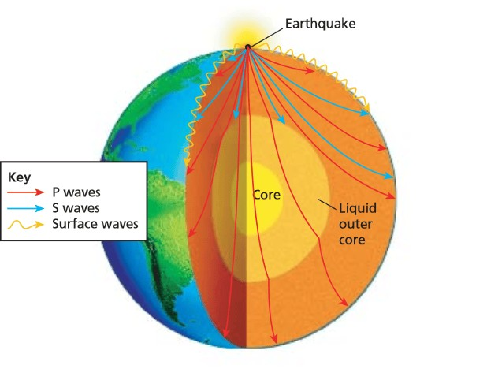

Section 11.3 Earthquakes
EarthquakeAn earthquake is a sudden and violent shaking of the Earth’s surface, caused by the rapid release of energy stored in the Earth’s crust. This energy is typically released along a fault, which is a fracture in the Earth’s crust where the two sides have moved relative to each other. Earthquakes can vary in size and intensity, ranging from small tremors that are barely noticeable to massive earthquakes that can cause widespread destruction and loss of life. The size of an earthquake is measured on the Richter scale, which is a logarithmic scale Figure 11.3.4.(c) that assigns a numerical value to the energy released by an earthquake. The Richter scale ranges from zero to 8.9. An earthquake of 4.0 or below is miner and go without noticing most often. 5.0 to 6.0 Richtor scale is moderate. 7.0 and over is major earthquake. Richter scale of 6.0 is 10 times more severe than one at 5.0 and one at 7.0 is 100 times more severe than 5.0. Earthquakes can occur anywhere in the world, but are most common along the boundaries of tectonic plates, where the movement of plates can cause stress and strain to build up in the crust. When this stress is released suddenly, it causes the ground to shake and can also trigger other geological events such as landslides, tsunamis, and volcanic eruptions.
Types of waves in Earthquake 1 When an earthquake occurs, the energy released by the movement of the Earth’s crust radiates outwards in the form of seismic waves. There are two main types of seismic waves: body waves and surface waves. Body waves are the fastest seismic waves and travel through the interior of the Earth. There are two types of body waves: P waves (primary waves) and S waves (secondary waves) Figure 11.3.2.(a). P waves are longitudinal waves that travel through the Earth’s interior by causing the rock particles to move back and forth in the direction of wave propagation. S waves are transverse waves that travel by causing the rock particles to move perpendicular to the direction of wave propagation. S wave cannot pass through the liquid and hence it gets blocked by the core Figure 11.3.3. P wave is faster than the S wave. Surface waves are slower than the body waves and travel along the Earth’s surface. There are two types of surface waves: Rayleigh waves and Love waves Figure 11.3.2.(b). Rayleigh waves are similar to ocean waves and cause the ground to move in a rolling motion, while Love waves cause the ground to move in a side-to-side motion. Seismic waves can be transmitted through a variety of materials, including solid rock, sediment, and water. Seismic waves travel faster through dense, rigid materials such as solid rock, and slower through less dense, more fluid materials such as sediment. Seismic waves can also be reflected, refracted, and diffracted as they pass through different materials or encounter changes in the composition or structure of the Earth’s crust. These interactions can cause seismic waves to change direction, speed up or slow down, and even amplify or dampen in intensity. By studying the behavior of seismic waves, scientists can gain insights into the internal structure and composition of the Earth’s crust, as well as the properties of the materials through which the waves travel.

The point in the Earth’s crust from where the energy is released is called the earthquake focus. The epicenter is the point on the Earth’s surface directly above the focus. Focus is the place where crustal rocks moved and epicenter is the point on earth’s surface directly over the focus as can be seen in Figure 11.3.4.(b). In seismology, shadow zones refer to areas on the Earth’s surface where seismic waves are not detected or are significantly weaker than in surrounding areas. The existence of these shadow zones was one of the key pieces of evidence used to support the theory of plate tectonics.
www.quora.com/What-are-seismic-waves